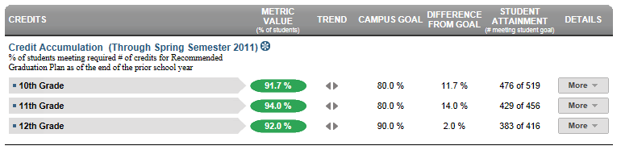

Dashboard Metrics


Credit Accumulation
Background
District Dashboard Metrics
In order to monitor progress toward completion of graduation requirements, many school districts across the nation, including Chicago, Dallas and New York, have incorporated metrics on credit accumulation into their internal performance management dashboards. During focus groups conducted with educators, the Credit Accumulation metric was considered useful by 94% of those surveyed.
Although graduation requirements vary by state, the general principles applied in the campus dashboard and data model for credit accumulation are applicable to any state or district.
Primary Metric
- Credit Accumulation: percent of students in the 10th, 11th and 12th grades earning the required number of credits as of the end of the most recent grading period.
Related Metrics
- On Track to Graduate: percent of students in the 10th, 11th and 12th grades who are on track to meet the 4x4 graduation requirement of earning one credit per year in each of the four core subjects, based on courses completed as of the prior year.
- High School Graduation Plan: percent of students on each graduation plan with comparison to campus goals for each.
- Falling Class Grade: percent of students with a core course grade, as of the most recent grading period, that dropped 10% or more from the grading period prior to the most recent.
- Repeat Courses: percent of students repeating a course due to course failure.
- Class Grades Below C Level: percent of students with two or more course grades below C for the most recent grading period.
User Interface
Dashboard Example
Figure 1 shows the Credit Accumulation metric as seen on the district dashboard.

Figure 1 Ed-Fi Credit Accumulation
Status Definition
The Status column is the percentage of students meeting the required number of credits for graduation at each grade level starting with 10th grade. The number of credits required for graduation are set by the state. The default mechanism to track credits by grade uses a linear path for the four years of high school (grades 9-12) which assumes accumulating 6.5 credit hours each year. The credit thresholds to graduate and for each year can be adjusted to a specific district's or state's criteria.
The Status indicator is determined by district goals.
Table 2 defines the Status indicators. The actual percentage is displayed with the indicator.
Metric Status Indicator | ||
Metric Name | Metric Status Indicator | District Goal (Delta) |
Credit Accumulation | Red (Percentage) = if percentage of students meeting the required number of credits is less than district goal Green (Percentage) = if percentage of students meeting the required number of credits is greater than or equal to the district goal | District Goal and the calculated percentage of students meeting the required number of credits |
(a) The Value column displays the total number of students meeting the required number of credits out of the total number of students in each grade level's cohort.
Trend Definition
Table 3 lists the trend indicators for the Credit Accumulation metric.
Trend Indicators: Objective is to indicate Credit Accumulation | |||
| Up green | If the value for the current time frame is more than 5 percentage points higher than the prior time frame, then display a gray arrow trending upward. | |
| Unchanged | If the value for the current time frame is less than or equal to 5 percentage points higher or less than or equal to 5 percentage points lower, then display two gray arrows pointing outward indicating no direction. | |
| Down red | If the value for the current time frame is more than 5 percentage points lower than the prior time frame, then display a gray arrow trending downward. | |
The trend does not show for the first occurrence of a time frame since data is not available.
Delta Definition
The Delta column is the absolute value of the difference between the district percentage (Status column) and the district goal percentage (District Goal column).
Delta Indicators: Objective is to indicate Credit Accumulation | ||
| Metric Name | District Goal | Delta |
Credit Accumulation | Set district goal | Red (Delta Percentage) = if the percentage of students meeting the required number of credits is less than the district goal Black (Delta Percentage) = if the percentage of students meeting the required number of credits is greater than the district goal |
Periodicity
Best practice is to load this data as soon as a semester grading period has ended and transcript information is updated. At minimum, load this information prior to the beginning of a school year to assess any scheduling and/or targeted intervention required. Other events may necessitate loading the data, such as when state credit requirements change and/or when large numbers of students transfer in or out of a campus.
Recommended Load Characteristics | |
Calendar | Throughout the school year |
Frequency of data load | End of each grading period |
Latency | Grading period |
Interchange schema | Interchange-StudentGrade.xsd |
Tooltips
The standard tool tips for the metric definition, column headers, and help functions display for this metric.
 is ‘No change from the prior period'
is ‘No change from the prior period' is ‘Getting worse from the prior period’
is ‘Getting worse from the prior period’ is 'Getting better from the prior period'
is 'Getting better from the prior period'
Business Rules
The Credit Accumulation metric indicates the percentage of students at or above a linear path for meeting the number of credits for graduation.
- At the start of the school year, a student is "on track" if their total number of credits is at or above the targeted number of credits for the year. Table 6 lists the targeted number of credits for each year by grade level.
Student’s | Yearly Recommended Credits | Percent of Target |
|---|---|---|
9 | not applicable | not applicable |
10 | 6.5 | 25% |
11 | 13 | 50% |
12 | 19.5 | 75% |
- After mid-year first-semester grade data is loaded, a student is "on track" if their total number of credits is at or above the targeted number of credits for mid-year. Table 7 lists the targeted number of credits for mid-year by grade level.
Student’s | Mid-Year Recommended Credits | Percent of Target |
|---|---|---|
9 | not applicable | not applicable |
10 | 9.5 | 37% |
11 | 16 | 62% |
12 | 22.5 | 87% |
On a straight linear basis the mid-year semester student needs to earn 3.25 credits. Because a student can only earn credits in 0.5 increments, the target is rounded down to 3 credits.
For students who fail a class, the credit is not earned or counted. If the student repeats the class and passes, the credit is earned and counted.
If a student is missing a transcript or has a partial transcript, that student is not included in the cohort.
If the Middle School campuses send the transcripts for High School credits earned, these credits are considered in this metric.
Data Assumptions
- This metric is not available for students currently in the 9th grade.
- The student’s transcript must reflect the current credits earned.
- The credit targets are set based upon the State’s graduation requirements.
- The metric tracks to a linear accumulation of credits.
- Any course that is included in a student transcript is included in the calculation for credits earned.
Computed Values
The number of accumulated credits is taken directly from the student's academic records.
Table 8 defines how values on the campus dashboard are calculated for each cohort grade level. The result of the calculation displays in the Status column on the dashboard.
Metric | Calculation |
Credit Accumulation | (Number of current students in cohort where credit accumulation is equal to or greater than target credits) * 100 / (Total number of current students in cohort) |
Calculation Notes
The cohort is the students currently in 10th, 11th, and 12th grades. Transfer (late enrollment) students with an incomplete transcript that does not reflect an accurate number of accumulated credits are excluded from the cohort. A transcript is incomplete if it is missing a year’s worth of data in the student transcript.
The yearly targets for accumulated credits are:
- 10th grade: 25% of the credits to graduate (26 credits)
- 11th grade: 50% of the credits to graduate
- 12th grade: 75% of the credits to graduate
The semester targets for accumulated credits are:
- 10th grade: 37% of the credits to graduate (26 credits)
- 11th grade: 62% of the credits to graduate
- 12th grade: 87% of the credits to graduate
Data Anomalies
Footnotes
An icon appears next to any metric where students have been excluded. When the user hovers over the icon, count of students who have been excluded appear in a tooltip with the reason(s) for exclusion. By clicking on the icon, the data administrator will link to the data administrator’s page for more detail.
Best practice is to exclude and footnote students based on the following criteria:
- Missing data
Date of Refresh
Best practice is for the date of last data refresh to appear next the metric in the following format:
- (Through Spring Semester 2010)
Implementation Considerations
Student Identity
Maintaining a correct and consistent student identity is at the center of any education data system. Most systems use some sort of unique identifier. However, sometimes this identifier is entered incorrectly or sometimes different systems use different identifiers.
The UDM XML supports the interchange of multiple types of identifiers. The StudentReference is a complex type within the UDM to maintain the referential integrity of the student (that is, ensuring that the data associated with each student is accurately associated with the right student). The complex type of the student reference assists with implementing the accurate matching algorithm to identify a student by utilizing any of the individual attributes (e.g., Student Unique State ID, Student ID, Campus Local ID (with Campus ID), Name and Birth Date). For example, if the Student Unique State ID is unknown, you can find the student’s identity by their Student ID, First Name, Last Name and Birth Date.
Incomplete Transcript
Students who transferred in may have an incomplete transcript pending when their student record is received by their current campus. Best practice is to exclude students from the cohort whose cumulative credits cannot be accurately obtained. This metric under represents students who are in the process of earning recovery credits or credits by exam – e.g., students transferring from alternative campuses or detention facilities, students who were previously home schooled. To aid administrators in identifying these students, a future enhancement to the Ed-Fi dashboards will add the ability to provide a count and listing of students who do not have complete transcripts
Targets for Accumulated Credits
The targets for accumulated credits are based upon state-defined credit requirements for graduation. A future enhancement under consideration for this metric is to track not only cumulative credits, but also the composition of credits against a set of state-specific requirements and/or a student’s chosen graduation plan.
Inclusion of Credits
The Ed-Fi dashboards assume that any credit type included in a transcript (e.g., standard, recovery, credits by exam, on-line) is to be included in the metric calculation. If any exceptions are relevant, these need to be accounted for in the metric calculation and assumptions.
Aggregate Metric Inclusions and Exclusions of Special Education Students
Each campus's aggregate metrics may include or exclude the special education population, depending on the intended purpose for a specific metric and campus goal. This may affect the district metric.
Drill Downs
Drill Down Views
The dashboards include the option to drill down and see more detail that is associated with a metric. Table 9 lists the drill down views that are recommended for this metric.
| Campus List | List of campuses and whether or not they meet the threshold for this metric for the specified period. |